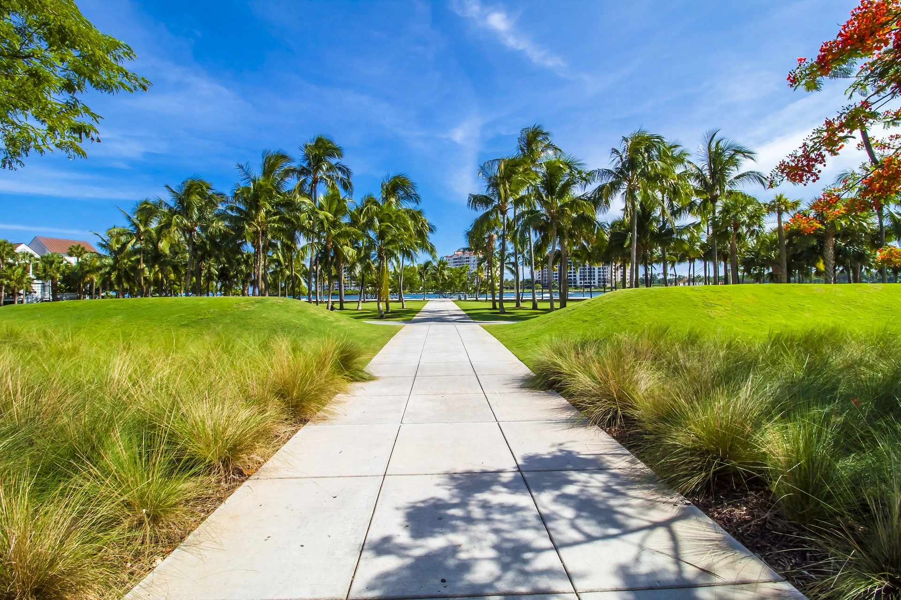
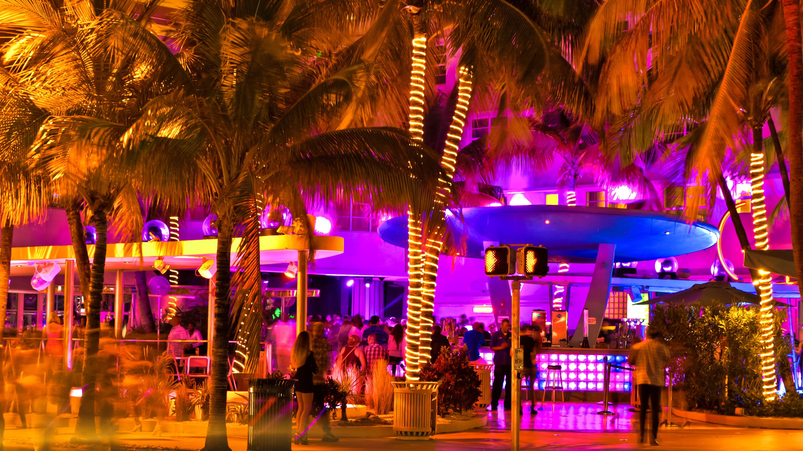
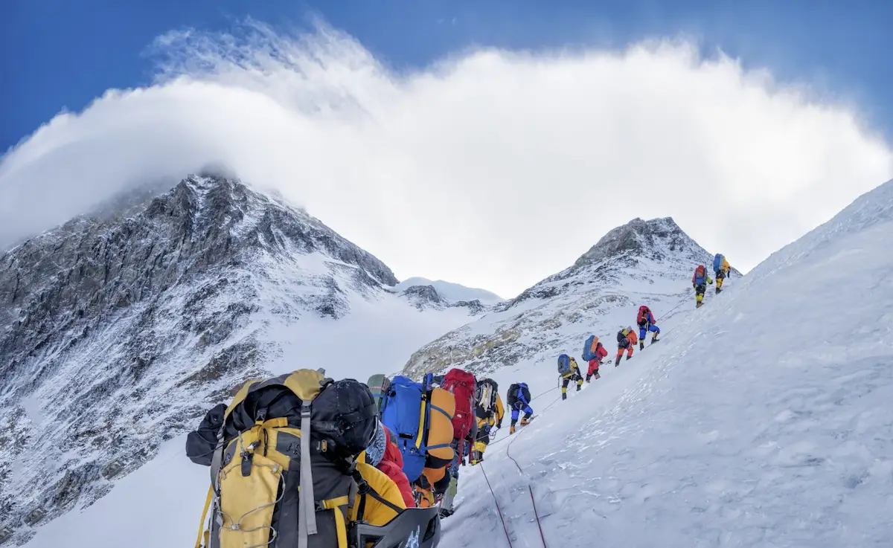
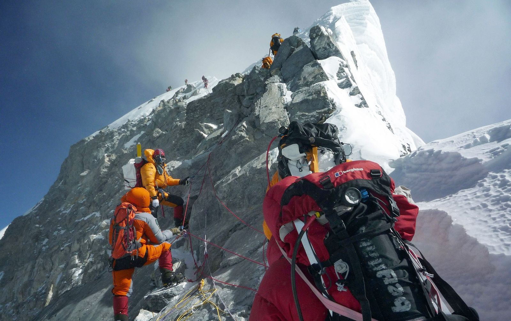
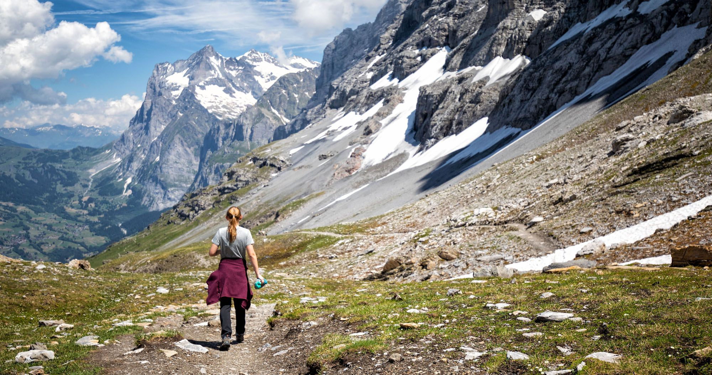
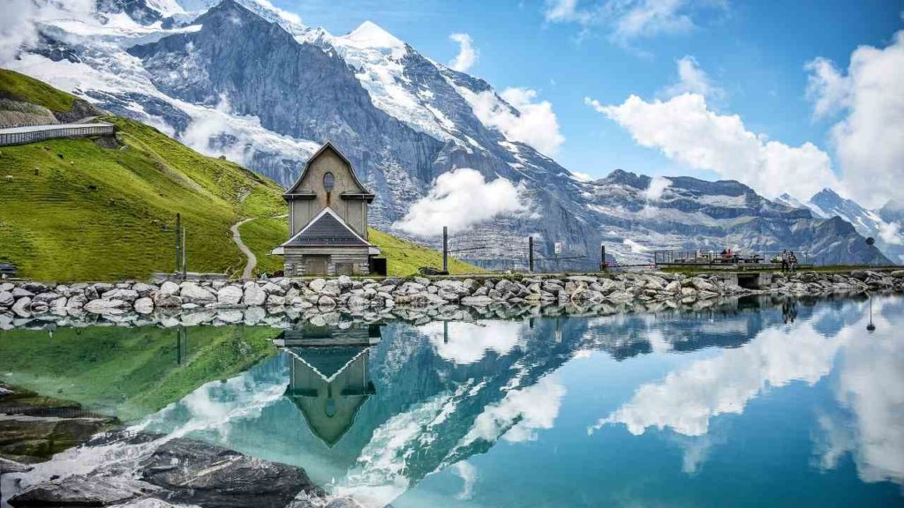

This website uses cookies to enhance your browsing experience and provide personalized services. For more information about how we handle cookies and protect your privacy, please refer to our Privacy Policy.
Thank you for your understanding and cooperation in helping us provide you with an enhanced browsing experience.
Exploring the Majestic Beauty of Puez-Odle Altopiano Hike
7 hours ago
Nestled in the heart of the Italian Dolomites, the Puez-Odle Altopiano hike stands as a testament to the breathtaking natural wonders that this region has to offer.
With its soaring peaks, lush meadows, and awe-inspiring vistas, this hiking trail has become a favorite among nature enthusiasts and adventure seekers alike. Embark on a journey with us as we unravel the charm and allure of the Puez-Odle Altopiano hike.
Articles
Package holidays in Miami, best way to relax
Soak up the Sun on the Beaches
Miami beach in the middle of the summer
Are you yearning for a much-needed getaway? Look no further than Miami, the ultimate destination for relaxation and rejuvenation. With its pristine beaches, tropical climate, and vibrant atmosphere, Miami offers the perfect package holiday experience. Let's explore the best ways to unwind and find your inner zen in this coastal paradise.
Miami is renowned for its stunning beaches, where...
you can lay back on soft sands and soak up the warm sunshine. Whether it's the famous South Beach with its lively ambiance or the tranquil shores of Key Biscayne, find a comfortable beach chair, listen to the soothing sound of the waves, and let your worries melt away.
Explore Nature and Parks

Park in Miami
Escape the hustle and bustle of the city by immersing yourself in Miami's natural wonders. Visit the stunning Everglades National Park, where you can take a leisurely airboat ride through the vast marshes, marvel at the diverse wildlife, and experience the tranquility of the swamplands. Alternatively, stroll through the lush landscapes of the Fairchild Tropical Botanic Garden and discover the beauty of exotic flora.
Enjoy Delicious Cuisine
Relaxation goes hand in hand with indulging in delectable cuisine, and Miami offers a diverse culinary scene to satisfy every palate. From fresh seafood to vibrant Latin American flavors, treat yourself to a culinary adventure in the city's renowned restaurants. Savor a romantic dinner by the waterfront or enjoy a casual beachside meal, accompanied by breathtaking views.
Embrace the Nightlife

Rich Nightlife in Miami
As the sun sets, Miami comes alive with its vibrant nightlife. Dance the night away at the trendy clubs of South Beach, where world-class DJs spin energetic beats. Alternatively, unwind with a cocktail at a rooftop bar, offering stunning views of the city's skyline. Miami's nightlife scene offers endless possibilities for relaxation and enjoyment.
In conclusion, Miami's package holidays provide the ideal opportunity to relax, rejuvenate, and escape from the stresses of everyday life. With its beautiful beaches, luxurious spas, captivating nature, exquisite cuisine, and lively nightlife, Miami promises an unforgettable experience that will leave you feeling refreshed and renewed.
My story of reaching Mount Everest
Training and Preparation
Have you ever dreamt of conquering the world's highest peak? For me, reaching the summit of Mount Everest was an awe-inspiring journey filled with challenges, perseverance, and a sense of accomplishment like no other. Let me share with you my extraordinary experience of scaling the majestic Mount Everest.

Our way to Camp #2 on Mt. Everest
Preparing for the Everest expedition involved months of intense training. I focused on building physical endurance, stamina, and mental fortitude to...
tackle the extreme conditions of the mountain. Rigorous exercises, high-altitude simulations, and climbing practice became part of my daily routine, ensuring that I was well-prepared for the arduous journey ahead.
Trekking to Base Camp
Trekking to Everest Base Camp
The journey to Mount Everest began with a challenging trek to Base Camp. The trail took us through breathtaking landscapes, crossing rivers, traversing glaciers, and ascending steep terrains. The camaraderie among fellow trekkers and the mesmerizing beauty of the Himalayas provided the motivation and inspiration to keep going.
Acclimatization and Summit Push

Summit Push
Acclimatization was a crucial aspect of the expedition. We spent weeks acclimatizing at different camps along the way, allowing our bodies to adapt to the thin air and extreme altitude. Finally, the time came for the summit push. It was a grueling and challenging ascent, battling freezing temperatures, low oxygen levels, and treacherous terrain. But the desire to stand on the roof of the world pushed me forward.
The Summit Achievement
Reaching the summit of Mount Everest was an indescribable moment of triumph. As I stood on the highest point on Earth, surrounded by a sea of peaks and the vastness of the Himalayas, a sense of awe and accomplishment washed over me. It was a testament to the human spirit's resilience and determination.
Reflection and Gratitude
Looking back at the incredible journey, I am filled with gratitude for the opportunity to experience such an extraordinary feat. Mount Everest taught me valuable life lessons about perseverance, teamwork, and pushing beyond my limits. It is a reminder that with dedication and belief in oneself, we can conquer even the highest of mountains.
In conclusion, my expedition to Mount Everest was an adventure of a lifetime. It tested my physical and mental strength, rewarded me with breathtaking views, and left an everlasting impact on my soul. Scaling the world's tallest peak is an experience that will forever be etched in my memory, reminding me of the heights we can reach when we dare to dream and never give up.
The Eiger Trail: A Breathtaking Journey Through the Swiss Alps
Trail Overview
Eiger Trail in Switzerland offers an exhilarating and unforgettable hiking experience amidst the stunning scenery of the Swiss Alps. This iconic trail takes you on a journey through breathtaking landscapes, dramatic cliffs, and awe-inspiring views. Join us as we explore the beauty and allure of the legendary Eiger Trail.

The Eiger Trail
The Eiger Trail is a well-known hiking route that stretches from Eigergletscher to Alpiglen, offering a total distance of approximately 6 kilometers. This trail takes you...
along the base of the Eiger North Face, one of the most challenging and revered climbing routes in the world. As you hike, you'll be surrounded by towering peaks, pristine glaciers, and alpine meadows, creating a picturesque backdrop for your adventure.
Spectacular Views
Breathtaking views of the Eiger
The Eiger Trail rewards hikers with breathtaking views at every turn. From the starting point at Eigergletscher, you'll witness the majestic Eiger North Face in all its glory, with its imposing cliffs and cascading waterfalls. As you progress along the trail, you'll be treated to panoramic vistas of the surrounding peaks, including the Jungfrau and Mönch, as well as the charming village of Grindelwald nestled in the valley below.
Challenging and Rewarding

The Lake on Eiger Trail
The Eiger Trail presents a moderate level of difficulty, making it suitable for hikers with some experience. The trail consists of rugged terrain, steep ascents and descents, and narrow pathways. However, the challenges are well worth it, as you'll be immersed in a landscape that seems straight out of a postcard and experience a sense of accomplishment as you conquer each section of the trail.
Eiger Railway and Mountain Huts
For those looking to extend their adventure, the Eiger Railway provides a convenient way to access the trail. The railway takes you to the starting point at Eigergletscher, allowing you to focus on the hiking experience itself. Additionally, along the trail, there are mountain huts where hikers can rest, refuel, and spend the night, immersing themselves in the alpine atmosphere and waking up to breathtaking views.
Seasonal Considerations
It is important to note that the Eiger Trail is typically open from June to October, as weather conditions can be challenging during the winter months. It is recommended to check the trail's accessibility and weather forecasts before embarking on the hike to ensure a safe and enjoyable experience.
Appreciating Nature's Splendor
The Eiger Trail offers more than just a physical challenge; it also allows you to appreciate the splendor of nature. The serene alpine meadows, the sound of cascading waterfalls, and the crisp mountain air provide a sensory experience that rejuvenates the soul and instills a deep sense of awe and appreciation for the natural world.
In conclusion, the Eiger Trail is a remarkable hiking adventure that combines breathtaking scenery, exhilarating challenges, and a profound connection with nature. It allows you to immerse yourself in the beauty of the Swiss Alps and experience firsthand the allure of the legendary Eiger North Face. Whether you're an avid hiker or a nature enthusiast, the Eiger Trail is an experience that will leave an indelible mark on your memory and inspire a lifelong love for the mountains.